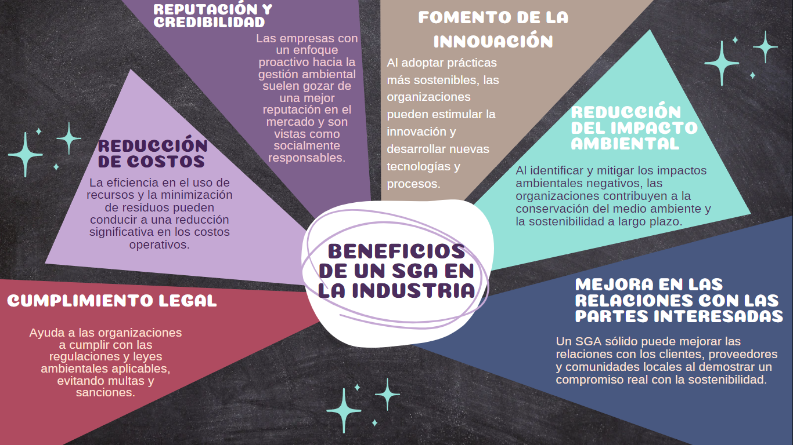

Sistemas de gestión ambiental en la industria
Los Sistemas de Gestión Ambiental son marcos estructurados que las organizaciones utilizan para gestionar y
mejorar su desempeño ambiental. Estos sistemas están diseñados para ayudar a las empresas a identificar,
monitorear, administrar y reducir su impacto ambiental, promoviendo prácticas más sostenibles. Un SGA
efectivo permite a las organizaciones cumplir con las regulaciones ambientales, minimizar los riesgos y
contribuir a la conservación del medio ambiente.
Estándares y Normativas
- ISO 14001: La norma ISO 14001 es el estándar internacional para los Sistemas de Gestión Ambiental.
Establece los requisitos para establecer, implementar, mantener y mejorar un sistema de gestión
ambiental eficaz.
Principios Básicos de un SGA
- Compromiso de la alta dirección: La alta dirección de la organización debe demostrar liderazgo y
compromiso con la mejora continua del desempeño ambiental.
- Comprensión del contexto: La organización debe comprender cómo las cuestiones ambientales afectan a sus
operaciones y partes interesadas.
- Planificación: Establecer objetivos y metas ambientales medibles, considerando aspectos como el consumo
de recursos naturales, la emisión de contaminantes y la gestión de residuos.
- Implementación y operación: Desarrollar los procesos y recursos necesarios para cumplir con las
políticas y metas ambientales establecidas.
- Monitoreo y medición: Establecer indicadores para evaluar el desempeño ambiental y realizar auditorías
internas periódicas para asegurar el cumplimiento.
- Revisión por la dirección: Evaluar periódicamente el SGA para asegurarse de que sea efectivo y se esté
mejorando continuamente.

La implementación de un Sistema de Gestión Ambiental efectivo no sólo es esencial para cumplir con las
regulaciones, sino que también ayuda a las organizaciones a operar de manera más eficiente, responsable y
sostenible. Un SGA bien gestionado beneficia al medio ambiente, pero también puede generar ventajas
competitivas y mejorar la reputación de la empresa en el mercado.